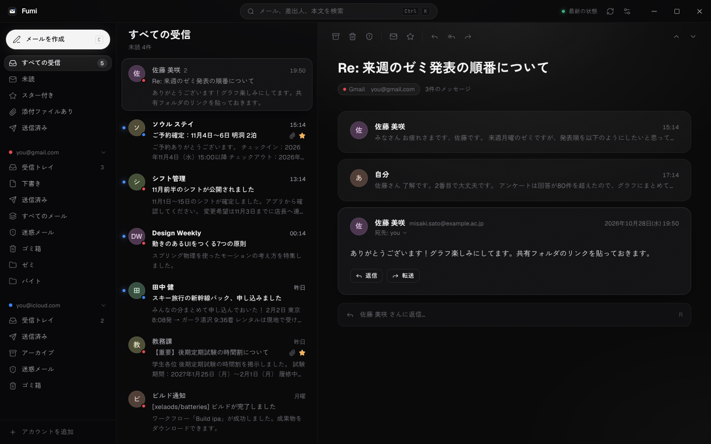

Fumi
Gmail と iCloud メールを、ひとつの受信箱で読み書きできる Windows 用のメールアプリです。

できること
- Gmail・iCloud メール・大学や会社の Google アカウントを並べて表示
- 新しいメールをすぐに受信して通知
- 返信・転送・添付ファイル付きの送信
- 読み込んだメールの本文までの検索
データの扱い
Fumi はあなたのパソコンの中だけで動きます。メールはパソコンから Google や Apple のメールサーバーへ直接接続して読み書きし、開発者や第三者のサーバーには送られません。詳しくはプライバシーポリシーをご覧ください。
ダウンロード
GitHub のリリースから入手できます。